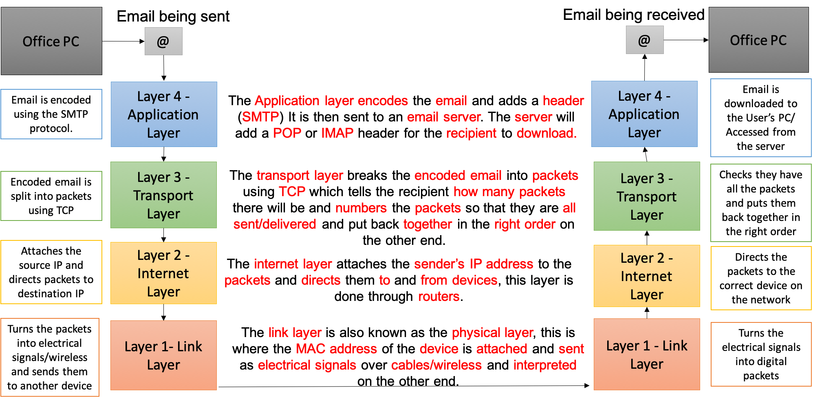
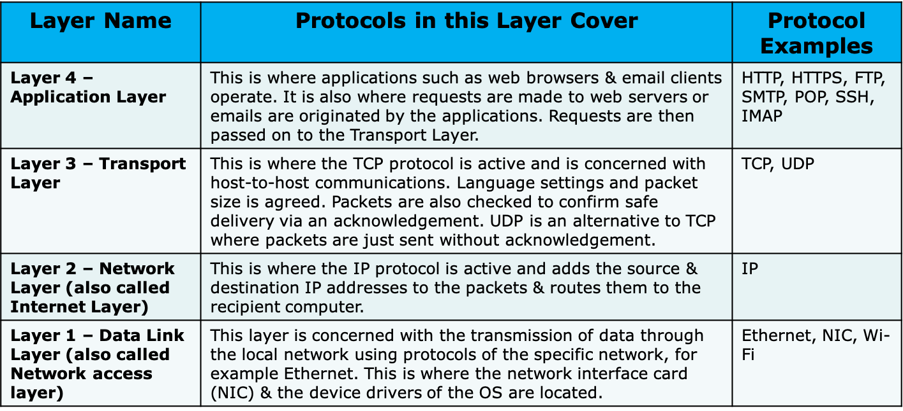

3.5.4 TCP/IP Model
Table of Contents
1 TCP/IP Layers

Learn It: The Concept of using Layers
- The TCP/IP Model consists of
four layers, eachcontaininga number ofprotocols, creating a modular design with each layer being responsible for a small part of the communication process. - The advantage of this modular design is that it lets suppliers such as Micorsoft or Apple easily adapt the protocol software to specific hardware and operating systems.
- For example, software for an
Ethernet systemcan be adapted to an optical-fibre network by changing only thelink layerand not affecting any of the other layers. Packets of dataare sent down through the layers,protocolsat each layer perform their individual functions, such asbreaking downandre-packagingthe data into smaller units, which are then passed to the layer below.- Data is then transmitted
across the networkand at the receiving end, the packets are thenreassembledandpassed back-upthrough the layers to the application they are intended for.
Learn It: Protocols working at each Layer
Network Protocols:
- When we talk about Network Protocols, we mean the
rulesdevices have to follow in order to communicate with each other when they are requesting and providing data and services. - With a complicated process such as
sending data packets, rules, called protocols, are essential.

Learn It: Advantages of using Layers
- Networking technologies are separated or compartmentalised into layers, each one containing
specifichardware and softwareprotocols. Each layerperforms specific tasks andinteractswith adjacent layers in the network model.
The advantages of this approach are:
- It simplifies the overall model by dividing it into four parts.
- Each layer is specialised to perform a particular function.
- The different layers can be combined in different ways as required.
- One layer can be developed or changed without affecting the other layers.
- It makes it easier to identify and correct networking errors and problems.
- It provides a universal standard for hardware and software manufacturers to follow, so that they will be able to communicate with each other.
TCP/IP Layer Model Explained Video
Try It: Application Layer
- What other websites might require the use of HTTPS?
Badge It: Exam Questions
Silver - Answer the following questions:
- The network manager at a company works with layers of network protocols.
- a) Describe what is meant by a layer of network protocols? (2 Marks)
- b) State the name of one layer of network protocols and outline its function? (2 Marks)
Upload to Fundamentals of Computer Networks - TCP/IP Model: Silver on BourneToLearn
Badge It: Exam Questions
Gold - Answer the following questions:
- Identify three benefits of using layers when working with network protocols? (3 Marks)
- Explain what is meant by a protocol? (1 Mark)
Upload to Fundamentals of Computer Networks - TCP/IP Model: Gold on BourneToLearn
Badge It: Exam Questions
Platinum - Answer the following questions:
- What elements may be found on the Application Layer of the 4-layer Internet model? (2 Marks)
- What purpose does the Transport Layer serve? (2 Marks)
- Describe two families of protocols that work on the link layer of the TCP/IP model? (4 Marks)
Upload to Fundamentals of Computer Networks - Network Security: Platinum on BourneToLearn